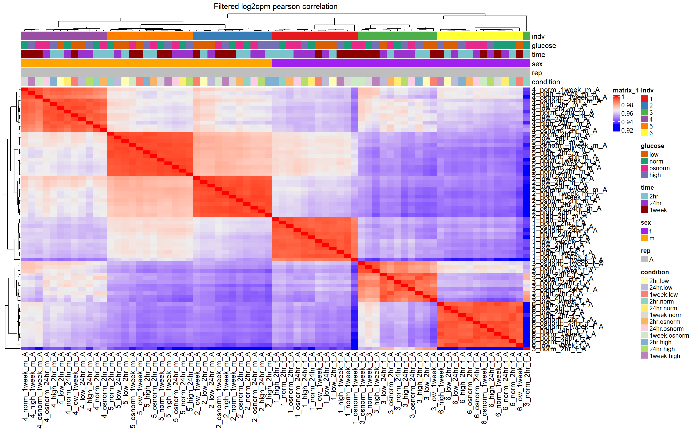
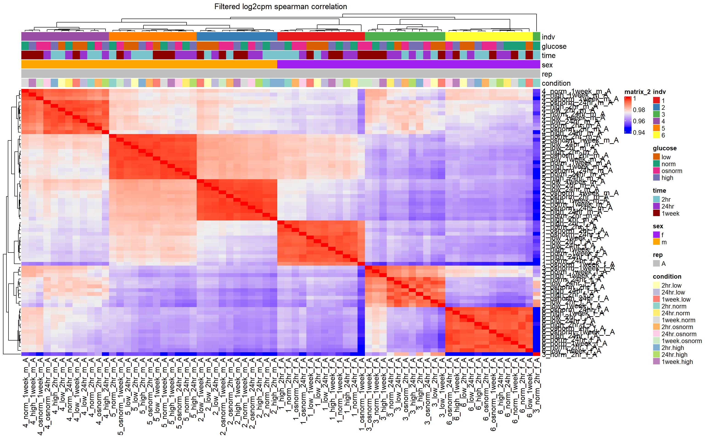

Differential_expression
Renee Matthews
2025-05-30
Last updated: 2025-05-30
Checks: 7 0
Knit directory: Glucose_project/
This reproducible R Markdown analysis was created with workflowr (version 1.7.1). The Checks tab describes the reproducibility checks that were applied when the results were created. The Past versions tab lists the development history.
Great! Since the R Markdown file has been committed to the Git repository, you know the exact version of the code that produced these results.
Great job! The global environment was empty. Objects defined in the global environment can affect the analysis in your R Markdown file in unknown ways. For reproduciblity it’s best to always run the code in an empty environment.
The command set.seed(20250526) was run prior to running
the code in the R Markdown file. Setting a seed ensures that any results
that rely on randomness, e.g. subsampling or permutations, are
reproducible.
Great job! Recording the operating system, R version, and package versions is critical for reproducibility.
Nice! There were no cached chunks for this analysis, so you can be confident that you successfully produced the results during this run.
Great job! Using relative paths to the files within your workflowr project makes it easier to run your code on other machines.
Great! You are using Git for version control. Tracking code development and connecting the code version to the results is critical for reproducibility.
The results in this page were generated with repository version bddc8ae. See the Past versions tab to see a history of the changes made to the R Markdown and HTML files.
Note that you need to be careful to ensure that all relevant files for
the analysis have been committed to Git prior to generating the results
(you can use wflow_publish or
wflow_git_commit). workflowr only checks the R Markdown
file, but you know if there are other scripts or data files that it
depends on. Below is the status of the Git repository when the results
were generated:
Ignored files:
Ignored: .Rhistory
Ignored: .Rproj.user/
Ignored: data/Annotation_data/
Ignored: data/Fastqc_data/
Ignored: data/organized_sample_info.tsv
Untracked files:
Untracked: code/nox_genelist.R
Unstaged changes:
Modified: analysis/index.Rmd
Note that any generated files, e.g. HTML, png, CSS, etc., are not included in this status report because it is ok for generated content to have uncommitted changes.
These are the previous versions of the repository in which changes were
made to the R Markdown (analysis/Diff_expression.Rmd) and
HTML (docs/Diff_expression.html) files. If you’ve
configured a remote Git repository (see ?wflow_git_remote),
click on the hyperlinks in the table below to view the files as they
were in that past version.
| File | Version | Author | Date | Message |
|---|---|---|---|---|
| Rmd | bddc8ae | reneeisnowhere | 2025-05-30 | first commit |
library(tidyverse)
library(kableExtra)
library(broom)
library(RColorBrewer)
library(ChIPseeker)
library("TxDb.Hsapiens.UCSC.hg38.knownGene")
library("org.Hs.eg.db")
library(rtracklayer)
library(edgeR)
library(ggfortify)
library(limma)
library(readr)
library(BiocGenerics)
library(gridExtra)
library(VennDiagram)
library(scales)
library(BiocParallel)
library(ggpubr)
library(devtools)
library(eulerr)
library(ggsignif)
library(plyranges)
library(ggrepel)
library(ComplexHeatmap)
library(cowplot)
library(smplot2)
library(data.table)
library(ChIPpeakAnno)sample_info_concat <- read_tsv("data/Annotation_data/organized_sample_info.tsv")
Counts_table <- read_tsv("data/Annotation_data/Full_counts_table.tsv")
raw_counts <- Counts_table %>%
column_to_rownames("Geneid") %>%
as.matrix()
new_names <-
sample_info_concat %>%
mutate(new_trt= case_when(`Conc(mM)`=="0"~ "low",
`Conc(mM)`=="5"~ "norm",
`Conc(mM)`=="5+25" ~"osnorm",
`Conc(mM)`=="30"~ "high")) %>%
mutate(sex=case_when(Line=="75-1"~ "f",
Line=="87-1"~ "f",
Line=="78-1" ~"f",
Line=="17-3"~ "m",
Line=="84-1"~"m",
Line=="90-1"~"m")) %>%
mutate(new_name=paste0(Individual,"_",new_trt,"_",Time,"_",sex,"_",Replicate))
mapped <- AnnotationDbi::select(org.Hs.eg.db,
keys = row.names(raw_counts),
columns = c("SYMBOL"),
keytype = "ENTREZID")
mapped_unique_symbolref <- mapped %>%
as.data.frame() %>%
group_by(ENTREZID) %>%
dplyr::slice(1) %>%
ungroup()
filter_out_sample_list <-new_names %>%
dplyr::filter(Core_ID!= "MCW_OJ_JT_R_16") %>%
dplyr::filter(Replicate != "B")subset_raw_counts <- raw_counts[,colnames(raw_counts) %in% filter_out_sample_list$Core_ID]
rename_vec <- setNames(new_names$new_name, new_names$Core_ID)
valid_cols <- intersect(colnames(subset_raw_counts), new_names$Core_ID)
subset_raw_counts <- subset_raw_counts %>%
as.data.frame() %>%
rename_with(~ rename_vec[.x], .cols = all_of(valid_cols)) %>%
as.matrix()Filtering out low expression genes
Filtering out lowly expressed genes using rowMeans >0 on the matrix without sample #16 (outlier) and without replicate B (impacts individual 1)
annotation_dataframe <- data.frame(timeset = colnames(subset_raw_counts)) %>%
separate_wider_delim(.,cols=timeset, names=c("indv","glucose","time","sex","rep"),delim="_")%>%
mutate(indv=factor(indv, levels= c( "1","2","3","4","5","6")),
glucose=factor(glucose, levels=c("low", "norm", "osnorm", "high")),
time=factor(time, levels = c("2hr" ,"24hr", "1week")),
sex=factor(sex, levels=c("f","m")),
rep=factor(rep, levels=c("A","B")),
condition=interaction(time,glucose),
names=paste0(indv,"_",glucose,"_",time,"_",sex,"_",rep)) %>%
mutate(condition=factor(condition)) %>%
column_to_rownames("names")lcpm <- cpm(subset_raw_counts, log= TRUE)
### for determining the basic cutoffs
subset_filt_raw_counts <- subset_raw_counts[rowMeans(lcpm)> 0,]
dim(subset_filt_raw_counts)[1] 13978 71Correlation heatmap of log2cpm
cor_lcpm_counts_pearson <- subset_filt_raw_counts %>%
cpm(., log = TRUE) %>%
cor(.,method = "pearson")
cor_lcpm_counts_spearman <- subset_filt_raw_counts %>%
cpm(., log = TRUE) %>%
cor(.,method = "spearman")
counts_corr_mat <-annotation_dataframe
###pulling color palette:
cb_palette <- brewer.pal(6, "Set1")
dr_palette <- brewer.pal(4,"Dark2")
con_palette <- brewer.pal(12,"Set3")
mat_colors <- list(
indv = setNames(cb_palette, unique(counts_corr_mat$indv)),
glucose = setNames(dr_palette, unique(counts_corr_mat$glucose)),
time = setNames(c("cadetblue3", "darkorchid3", "red4"), unique(counts_corr_mat$time)),
sex = setNames(c("purple", "orange"), unique(counts_corr_mat$sex)),
rep = setNames(c("grey"),
unique(counts_corr_mat$rep)),
condition = setNames(con_palette, unique(counts_corr_mat$condition))
)
htanno_full_pearson <- ComplexHeatmap::HeatmapAnnotation(df = counts_corr_mat, col = mat_colors)
Heatmap(cor_lcpm_counts_pearson,
column_title="Filtered log2cpm pearson correlation",
top_annotation = htanno_full_pearson
)
htanno_full_spearman <- ComplexHeatmap::HeatmapAnnotation(df = counts_corr_mat, col = mat_colors)
Heatmap(cor_lcpm_counts_spearman,
top_annotation = htanno_full_spearman,
column_title="Filtered log2cpm spearman correlation") ### PCA analysis of subset data
prop_var_percent <- function(pca_result){
# Ensure the input is a PCA result object
if (!inherits(pca_result, "prcomp")) {
stop("Input must be a result from prcomp()")
}
# Get the standard deviations from the PCA result
sdev <- pca_result$sdev
# Calculate the proportion of variance
proportion_variance <- (sdev^2) / sum(sdev^2)*100
return(proportion_variance)
}
get_regr_pval <- function(mod) {
# Returns the p-value for the Fstatistic of a linear model
# mod: class lm
stopifnot(class(mod) == "lm")
fstat <- summary(mod)$fstatistic
pval <- 1 - pf(fstat[1], fstat[2], fstat[3])
return(pval)
}
plot_versus_pc <- function(df, pc_num, fac) {
# df: data.frame
# pc_num: numeric, specific PC for plotting
# fac: column name of df for plotting against PC
pc_char <- paste0("PC", pc_num)
# Calculate F-statistic p-value for linear model
pval <- get_regr_pval(lm(df[, pc_char] ~ df[, fac]))
if (is.numeric(df[, f])) {
ggplot(df, aes_string(x = f, y = pc_char)) + geom_point() +
geom_smooth(method = "lm") + labs(title = sprintf("p-val: %.2f", pval))
} else {
ggplot(df, aes_string(x = f, y = pc_char)) + geom_boxplot() +
labs(title = sprintf("p-val: %.2f", pval))
}
}
plot_versus_pc1 <- function(df, pc_num, fac, rotate_x = FALSE) {
pc_char <- paste0("PC", pc_num)
pval <- get_regr_pval(lm(df[[pc_char]] ~ df[[fac]]))
rotate_labels <- theme(axis.text.x = element_text(angle = 90, vjust = 0.5, hjust = 1))
if (is.numeric(df[[fac]])) {
p <- ggplot(df, aes_string(x = fac, y = pc_char)) +
geom_point() +
geom_smooth(method = "lm") +
labs(title = sprintf("p-val: %.2f", pval)) +
rotate_labels
} else {
p <- ggplot(df, aes_string(x = fac, y = pc_char)) +
geom_boxplot() +
labs(title = sprintf("p-val: %.2f", pval)) +
rotate_labels
}
return(p)
}lcpm_filt_counts <- subset_filt_raw_counts %>%
cpm(.,log = TRUE)
df_anno_mat <- annotation_dataframe
pca_lcpm_filt <- prcomp(t(lcpm_filt_counts), scale. = TRUE)
pca_filt_anno <- data.frame(df_anno_mat, pca_lcpm_filt$x)
plotting_var_names <- prop_var_percent(pca_lcpm_filt)
pca_filt_anno %>%
ggplot(.,aes(x = PC1, y = PC2, col=condition, shape=glucose, group=rep))+
geom_point(size= 3)+
ggrepel::geom_text_repel(aes(label = indv))+
ggtitle(expression("PCA of log"[2]*"(cpm) filtered peak set"))+
theme_bw()+
guides(size =3)+
labs(y = paste0("PC 2 (",round(plotting_var_names[2],2),"%)")
, x =paste0("PC 1 (",round(plotting_var_names[1],2),"%)"))+
theme(plot.title=element_text(size= 14,hjust = 0.5),
axis.title = element_text(size = 12, color = "black"))
pca_filt_anno %>%
ggplot(.,aes(x = PC3, y = PC4, col=condition, shape=glucose, group=rep))+
geom_point(size= 3)+
ggrepel::geom_text_repel(aes(label = indv))+
ggtitle(expression("PCA of log"[2]*"(cpm) filtered peak set"))+
theme_bw()+
guides(size =3)+
labs(y = paste0("PC 4 (",round(plotting_var_names[4],2),"%)")
, x =paste0("PC 3 (",round(plotting_var_names[3],2),"%)"))+
theme(plot.title=element_text(size= 14,hjust = 0.5),
axis.title = element_text(size = 12, color = "black"))
facs <- c("indv", "glucose", "time", "sex","condition")
names(facs) <- c("Individual", "Glucose level", "Time", "Sex", "Condition(time_glucose-level)")
for (f in facs) {
# PC1 v PC2
# pca_plot(pca_final_four_anno, col_var = f, shape_var = time,
# title = names(facs)[which(facs == f)])
# print(last_plot())
# Plot f versus PC1 and PC2
f_v_pc1 <- gridExtra::arrangeGrob(plot_versus_pc1(pca_filt_anno, 1, f))
f_v_pc2 <- gridExtra::arrangeGrob(plot_versus_pc1(pca_filt_anno, 2, f))
f_v_pc3 <- gridExtra::arrangeGrob(plot_versus_pc1(pca_filt_anno, 3, f))
f_v_pc4 <- gridExtra::arrangeGrob(plot_versus_pc1(pca_filt_anno, 4, f))
f_v_pc5 <- gridExtra::arrangeGrob(
plot_versus_pc1(pca_filt_anno, 5, f) +
theme(axis.text.x = element_text(angle = 90, vjust = 0.5, hjust = 1))
)
gridExtra::grid.arrange(f_v_pc1, f_v_pc2, f_v_pc3,f_v_pc4, f_v_pc5, ncol = 3, nrow=2, top = names(facs)[which(facs == f)])
}


 ### DEG analysis
### DEG analysis
dge <- DGEList(counts=subset_filt_raw_counts)
stopifnot(all(colnames(subset_filt_raw_counts) == rownames(df_anno_mat)))
dge$samples <- cbind(dge$samples, df_anno_mat)
dge <- calcNormFactors(dge)
dge$samples group lib.size norm.factors indv glucose time sex rep
1_norm_2hr_f_A 1 14992620 0.9984893 1 norm 2hr f A
1_low_2hr_f_A 1 16045703 0.9830013 1 low 2hr f A
1_low_24hr_f_A 1 20680900 0.9587281 1 low 24hr f A
1_low_1week_f_A 1 16272792 0.9587507 1 low 1week f A
2_norm_2hr_m_A 1 17173224 1.0035054 2 norm 2hr m A
2_high_2hr_m_A 1 16639064 1.0100647 2 high 2hr m A
2_osnorm_2hr_m_A 1 18644235 1.0250138 2 osnorm 2hr m A
2_high_24hr_m_A 1 17803576 1.0239424 2 high 24hr m A
2_osnorm_24hr_m_A 1 18053974 1.0298807 2 osnorm 24hr m A
2_norm_1week_m_A 1 19478441 1.0324606 2 norm 1week m A
1_high_2hr_f_A 1 16167349 0.9761718 1 high 2hr f A
2_high_1week_m_A 1 19658777 1.0287449 2 high 1week m A
2_osnorm_1week_m_A 1 18811741 1.0175439 2 osnorm 1week m A
2_low_2hr_m_A 1 16403321 1.0256340 2 low 2hr m A
2_low_24hr_m_A 1 17181554 1.0315049 2 low 24hr m A
2_low_1week_m_A 1 18651903 1.0215598 2 low 1week m A
3_norm_2hr_f_A 1 16776928 0.9850247 3 norm 2hr f A
3_high_2hr_f_A 1 17092629 1.0077790 3 high 2hr f A
3_osnorm_2hr_f_A 1 17719191 1.0054248 3 osnorm 2hr f A
3_norm_24hr_f_A 1 18091965 1.0205030 3 norm 24hr f A
3_high_24hr_f_A 1 28070821 1.0380944 3 high 24hr f A
1_osnorm_2hr_f_A 1 15997510 0.9693999 1 osnorm 2hr f A
3_osnorm_24hr_f_A 1 19889428 1.0152826 3 osnorm 24hr f A
3_norm_1week_f_A 1 18113829 1.0124075 3 norm 1week f A
3_high_1week_f_A 1 20129339 1.0128988 3 high 1week f A
3_osnorm_1week_f_A 1 18088287 1.0024521 3 osnorm 1week f A
3_low_2hr_f_A 1 18277207 1.0175695 3 low 2hr f A
3_low_24hr_f_A 1 20035798 1.0127316 3 low 24hr f A
3_low_1week_f_A 1 20259255 0.9887022 3 low 1week f A
4_norm_2hr_m_A 1 19051284 0.9923758 4 norm 2hr m A
4_high_2hr_m_A 1 20669141 0.9996293 4 high 2hr m A
4_osnorm_2hr_m_A 1 18629905 0.9795338 4 osnorm 2hr m A
1_norm_24hr_f_A 1 16637655 0.9145545 1 norm 24hr f A
4_norm_24hr_m_A 1 18811203 1.0352214 4 norm 24hr m A
4_high_24hr_m_A 1 20423554 1.0219497 4 high 24hr m A
4_osnorm_24hr_m_A 1 17914423 1.0270885 4 osnorm 24hr m A
4_norm_1week_m_A 1 19235598 1.0163009 4 norm 1week m A
4_high_1week_m_A 1 18374945 1.0017527 4 high 1week m A
4_osnorm_1week_m_A 1 17121395 0.9876747 4 osnorm 1week m A
4_low_2hr_m_A 1 18251238 1.0073954 4 low 2hr m A
4_low_24hr_m_A 1 17964230 1.0029929 4 low 24hr m A
4_low_1week_m_A 1 18818657 1.0047943 4 low 1week m A
5_norm_2hr_m_A 1 18614809 1.0177275 5 norm 2hr m A
1_high_24hr_f_A 1 17506599 0.9129430 1 high 24hr f A
5_high_2hr_m_A 1 22363026 1.0024546 5 high 2hr m A
5_osnorm_2hr_m_A 1 17964465 1.0003134 5 osnorm 2hr m A
5_norm_24hr_m_A 1 18503552 0.9925119 5 norm 24hr m A
5_high_24hr_m_A 1 17375429 0.9947440 5 high 24hr m A
5_osnorm_24hr_m_A 1 18697750 0.9901897 5 osnorm 24hr m A
5_norm_1week_m_A 1 17696809 1.0007564 5 norm 1week m A
5_high_1week_m_A 1 18387625 1.0005862 5 high 1week m A
5_osnorm_1week_m_A 1 16184864 1.0114902 5 osnorm 1week m A
5_low_2hr_m_A 1 17230931 1.0099424 5 low 2hr m A
5_low_24hr_m_A 1 18132180 1.0100082 5 low 24hr m A
1_osnorm_24hr_f_A 1 16286005 0.9290966 1 osnorm 24hr f A
5_low_1week_m_A 1 18359632 1.0127034 5 low 1week m A
6_norm_2hr_f_A 1 17436704 0.9830301 6 norm 2hr f A
6_high_2hr_f_A 1 16688222 0.9953388 6 high 2hr f A
6_osnorm_2hr_f_A 1 16652903 0.9979950 6 osnorm 2hr f A
6_norm_24hr_f_A 1 17335613 1.0184949 6 norm 24hr f A
6_high_24hr_f_A 1 17346195 0.9901657 6 high 24hr f A
6_osnorm_24hr_f_A 1 17652481 1.0196610 6 osnorm 24hr f A
6_norm_1week_f_A 1 20212671 1.0039989 6 norm 1week f A
6_high_1week_f_A 1 20689080 1.0056180 6 high 1week f A
6_osnorm_1week_f_A 1 20417448 1.0014762 6 osnorm 1week f A
1_norm_1week_f_A 1 16139419 0.9446316 1 norm 1week f A
6_low_2hr_f_A 1 19020099 1.0194203 6 low 2hr f A
6_low_24hr_f_A 1 20279089 1.0133007 6 low 24hr f A
6_low_1week_f_A 1 19784016 1.0264167 6 low 1week f A
1_high_1week_f_A 1 15242131 0.9644690 1 high 1week f A
1_osnorm_1week_f_A 1 18761375 0.9509140 1 osnorm 1week f A
condition
1_norm_2hr_f_A 2hr.norm
1_low_2hr_f_A 2hr.low
1_low_24hr_f_A 24hr.low
1_low_1week_f_A 1week.low
2_norm_2hr_m_A 2hr.norm
2_high_2hr_m_A 2hr.high
2_osnorm_2hr_m_A 2hr.osnorm
2_high_24hr_m_A 24hr.high
2_osnorm_24hr_m_A 24hr.osnorm
2_norm_1week_m_A 1week.norm
1_high_2hr_f_A 2hr.high
2_high_1week_m_A 1week.high
2_osnorm_1week_m_A 1week.osnorm
2_low_2hr_m_A 2hr.low
2_low_24hr_m_A 24hr.low
2_low_1week_m_A 1week.low
3_norm_2hr_f_A 2hr.norm
3_high_2hr_f_A 2hr.high
3_osnorm_2hr_f_A 2hr.osnorm
3_norm_24hr_f_A 24hr.norm
3_high_24hr_f_A 24hr.high
1_osnorm_2hr_f_A 2hr.osnorm
3_osnorm_24hr_f_A 24hr.osnorm
3_norm_1week_f_A 1week.norm
3_high_1week_f_A 1week.high
3_osnorm_1week_f_A 1week.osnorm
3_low_2hr_f_A 2hr.low
3_low_24hr_f_A 24hr.low
3_low_1week_f_A 1week.low
4_norm_2hr_m_A 2hr.norm
4_high_2hr_m_A 2hr.high
4_osnorm_2hr_m_A 2hr.osnorm
1_norm_24hr_f_A 24hr.norm
4_norm_24hr_m_A 24hr.norm
4_high_24hr_m_A 24hr.high
4_osnorm_24hr_m_A 24hr.osnorm
4_norm_1week_m_A 1week.norm
4_high_1week_m_A 1week.high
4_osnorm_1week_m_A 1week.osnorm
4_low_2hr_m_A 2hr.low
4_low_24hr_m_A 24hr.low
4_low_1week_m_A 1week.low
5_norm_2hr_m_A 2hr.norm
1_high_24hr_f_A 24hr.high
5_high_2hr_m_A 2hr.high
5_osnorm_2hr_m_A 2hr.osnorm
5_norm_24hr_m_A 24hr.norm
5_high_24hr_m_A 24hr.high
5_osnorm_24hr_m_A 24hr.osnorm
5_norm_1week_m_A 1week.norm
5_high_1week_m_A 1week.high
5_osnorm_1week_m_A 1week.osnorm
5_low_2hr_m_A 2hr.low
5_low_24hr_m_A 24hr.low
1_osnorm_24hr_f_A 24hr.osnorm
5_low_1week_m_A 1week.low
6_norm_2hr_f_A 2hr.norm
6_high_2hr_f_A 2hr.high
6_osnorm_2hr_f_A 2hr.osnorm
6_norm_24hr_f_A 24hr.norm
6_high_24hr_f_A 24hr.high
6_osnorm_24hr_f_A 24hr.osnorm
6_norm_1week_f_A 1week.norm
6_high_1week_f_A 1week.high
6_osnorm_1week_f_A 1week.osnorm
1_norm_1week_f_A 1week.norm
6_low_2hr_f_A 2hr.low
6_low_24hr_f_A 24hr.low
6_low_1week_f_A 1week.low
1_high_1week_f_A 1week.high
1_osnorm_1week_f_A 1week.osnormmaking the model matrix
mm <- model.matrix(~0 +condition, data=dge$samples)
colnames(mm) <- levels(dge$samples$condition)
colnames(mm) <- make.names(colnames(mm))
mm X2hr.low X24hr.low X1week.low X2hr.norm X24hr.norm
1_norm_2hr_f_A 0 0 0 1 0
1_low_2hr_f_A 1 0 0 0 0
1_low_24hr_f_A 0 1 0 0 0
1_low_1week_f_A 0 0 1 0 0
2_norm_2hr_m_A 0 0 0 1 0
2_high_2hr_m_A 0 0 0 0 0
2_osnorm_2hr_m_A 0 0 0 0 0
2_high_24hr_m_A 0 0 0 0 0
2_osnorm_24hr_m_A 0 0 0 0 0
2_norm_1week_m_A 0 0 0 0 0
1_high_2hr_f_A 0 0 0 0 0
2_high_1week_m_A 0 0 0 0 0
2_osnorm_1week_m_A 0 0 0 0 0
2_low_2hr_m_A 1 0 0 0 0
2_low_24hr_m_A 0 1 0 0 0
2_low_1week_m_A 0 0 1 0 0
3_norm_2hr_f_A 0 0 0 1 0
3_high_2hr_f_A 0 0 0 0 0
3_osnorm_2hr_f_A 0 0 0 0 0
3_norm_24hr_f_A 0 0 0 0 1
3_high_24hr_f_A 0 0 0 0 0
1_osnorm_2hr_f_A 0 0 0 0 0
3_osnorm_24hr_f_A 0 0 0 0 0
3_norm_1week_f_A 0 0 0 0 0
3_high_1week_f_A 0 0 0 0 0
3_osnorm_1week_f_A 0 0 0 0 0
3_low_2hr_f_A 1 0 0 0 0
3_low_24hr_f_A 0 1 0 0 0
3_low_1week_f_A 0 0 1 0 0
4_norm_2hr_m_A 0 0 0 1 0
4_high_2hr_m_A 0 0 0 0 0
4_osnorm_2hr_m_A 0 0 0 0 0
1_norm_24hr_f_A 0 0 0 0 1
4_norm_24hr_m_A 0 0 0 0 1
4_high_24hr_m_A 0 0 0 0 0
4_osnorm_24hr_m_A 0 0 0 0 0
4_norm_1week_m_A 0 0 0 0 0
4_high_1week_m_A 0 0 0 0 0
4_osnorm_1week_m_A 0 0 0 0 0
4_low_2hr_m_A 1 0 0 0 0
4_low_24hr_m_A 0 1 0 0 0
4_low_1week_m_A 0 0 1 0 0
5_norm_2hr_m_A 0 0 0 1 0
1_high_24hr_f_A 0 0 0 0 0
5_high_2hr_m_A 0 0 0 0 0
5_osnorm_2hr_m_A 0 0 0 0 0
5_norm_24hr_m_A 0 0 0 0 1
5_high_24hr_m_A 0 0 0 0 0
5_osnorm_24hr_m_A 0 0 0 0 0
5_norm_1week_m_A 0 0 0 0 0
5_high_1week_m_A 0 0 0 0 0
5_osnorm_1week_m_A 0 0 0 0 0
5_low_2hr_m_A 1 0 0 0 0
5_low_24hr_m_A 0 1 0 0 0
1_osnorm_24hr_f_A 0 0 0 0 0
5_low_1week_m_A 0 0 1 0 0
6_norm_2hr_f_A 0 0 0 1 0
6_high_2hr_f_A 0 0 0 0 0
6_osnorm_2hr_f_A 0 0 0 0 0
6_norm_24hr_f_A 0 0 0 0 1
6_high_24hr_f_A 0 0 0 0 0
6_osnorm_24hr_f_A 0 0 0 0 0
6_norm_1week_f_A 0 0 0 0 0
6_high_1week_f_A 0 0 0 0 0
6_osnorm_1week_f_A 0 0 0 0 0
1_norm_1week_f_A 0 0 0 0 0
6_low_2hr_f_A 1 0 0 0 0
6_low_24hr_f_A 0 1 0 0 0
6_low_1week_f_A 0 0 1 0 0
1_high_1week_f_A 0 0 0 0 0
1_osnorm_1week_f_A 0 0 0 0 0
X1week.norm X2hr.osnorm X24hr.osnorm X1week.osnorm X2hr.high
1_norm_2hr_f_A 0 0 0 0 0
1_low_2hr_f_A 0 0 0 0 0
1_low_24hr_f_A 0 0 0 0 0
1_low_1week_f_A 0 0 0 0 0
2_norm_2hr_m_A 0 0 0 0 0
2_high_2hr_m_A 0 0 0 0 1
2_osnorm_2hr_m_A 0 1 0 0 0
2_high_24hr_m_A 0 0 0 0 0
2_osnorm_24hr_m_A 0 0 1 0 0
2_norm_1week_m_A 1 0 0 0 0
1_high_2hr_f_A 0 0 0 0 1
2_high_1week_m_A 0 0 0 0 0
2_osnorm_1week_m_A 0 0 0 1 0
2_low_2hr_m_A 0 0 0 0 0
2_low_24hr_m_A 0 0 0 0 0
2_low_1week_m_A 0 0 0 0 0
3_norm_2hr_f_A 0 0 0 0 0
3_high_2hr_f_A 0 0 0 0 1
3_osnorm_2hr_f_A 0 1 0 0 0
3_norm_24hr_f_A 0 0 0 0 0
3_high_24hr_f_A 0 0 0 0 0
1_osnorm_2hr_f_A 0 1 0 0 0
3_osnorm_24hr_f_A 0 0 1 0 0
3_norm_1week_f_A 1 0 0 0 0
3_high_1week_f_A 0 0 0 0 0
3_osnorm_1week_f_A 0 0 0 1 0
3_low_2hr_f_A 0 0 0 0 0
3_low_24hr_f_A 0 0 0 0 0
3_low_1week_f_A 0 0 0 0 0
4_norm_2hr_m_A 0 0 0 0 0
4_high_2hr_m_A 0 0 0 0 1
4_osnorm_2hr_m_A 0 1 0 0 0
1_norm_24hr_f_A 0 0 0 0 0
4_norm_24hr_m_A 0 0 0 0 0
4_high_24hr_m_A 0 0 0 0 0
4_osnorm_24hr_m_A 0 0 1 0 0
4_norm_1week_m_A 1 0 0 0 0
4_high_1week_m_A 0 0 0 0 0
4_osnorm_1week_m_A 0 0 0 1 0
4_low_2hr_m_A 0 0 0 0 0
4_low_24hr_m_A 0 0 0 0 0
4_low_1week_m_A 0 0 0 0 0
5_norm_2hr_m_A 0 0 0 0 0
1_high_24hr_f_A 0 0 0 0 0
5_high_2hr_m_A 0 0 0 0 1
5_osnorm_2hr_m_A 0 1 0 0 0
5_norm_24hr_m_A 0 0 0 0 0
5_high_24hr_m_A 0 0 0 0 0
5_osnorm_24hr_m_A 0 0 1 0 0
5_norm_1week_m_A 1 0 0 0 0
5_high_1week_m_A 0 0 0 0 0
5_osnorm_1week_m_A 0 0 0 1 0
5_low_2hr_m_A 0 0 0 0 0
5_low_24hr_m_A 0 0 0 0 0
1_osnorm_24hr_f_A 0 0 1 0 0
5_low_1week_m_A 0 0 0 0 0
6_norm_2hr_f_A 0 0 0 0 0
6_high_2hr_f_A 0 0 0 0 1
6_osnorm_2hr_f_A 0 1 0 0 0
6_norm_24hr_f_A 0 0 0 0 0
6_high_24hr_f_A 0 0 0 0 0
6_osnorm_24hr_f_A 0 0 1 0 0
6_norm_1week_f_A 1 0 0 0 0
6_high_1week_f_A 0 0 0 0 0
6_osnorm_1week_f_A 0 0 0 1 0
1_norm_1week_f_A 1 0 0 0 0
6_low_2hr_f_A 0 0 0 0 0
6_low_24hr_f_A 0 0 0 0 0
6_low_1week_f_A 0 0 0 0 0
1_high_1week_f_A 0 0 0 0 0
1_osnorm_1week_f_A 0 0 0 1 0
X24hr.high X1week.high
1_norm_2hr_f_A 0 0
1_low_2hr_f_A 0 0
1_low_24hr_f_A 0 0
1_low_1week_f_A 0 0
2_norm_2hr_m_A 0 0
2_high_2hr_m_A 0 0
2_osnorm_2hr_m_A 0 0
2_high_24hr_m_A 1 0
2_osnorm_24hr_m_A 0 0
2_norm_1week_m_A 0 0
1_high_2hr_f_A 0 0
2_high_1week_m_A 0 1
2_osnorm_1week_m_A 0 0
2_low_2hr_m_A 0 0
2_low_24hr_m_A 0 0
2_low_1week_m_A 0 0
3_norm_2hr_f_A 0 0
3_high_2hr_f_A 0 0
3_osnorm_2hr_f_A 0 0
3_norm_24hr_f_A 0 0
3_high_24hr_f_A 1 0
1_osnorm_2hr_f_A 0 0
3_osnorm_24hr_f_A 0 0
3_norm_1week_f_A 0 0
3_high_1week_f_A 0 1
3_osnorm_1week_f_A 0 0
3_low_2hr_f_A 0 0
3_low_24hr_f_A 0 0
3_low_1week_f_A 0 0
4_norm_2hr_m_A 0 0
4_high_2hr_m_A 0 0
4_osnorm_2hr_m_A 0 0
1_norm_24hr_f_A 0 0
4_norm_24hr_m_A 0 0
4_high_24hr_m_A 1 0
4_osnorm_24hr_m_A 0 0
4_norm_1week_m_A 0 0
4_high_1week_m_A 0 1
4_osnorm_1week_m_A 0 0
4_low_2hr_m_A 0 0
4_low_24hr_m_A 0 0
4_low_1week_m_A 0 0
5_norm_2hr_m_A 0 0
1_high_24hr_f_A 1 0
5_high_2hr_m_A 0 0
5_osnorm_2hr_m_A 0 0
5_norm_24hr_m_A 0 0
5_high_24hr_m_A 1 0
5_osnorm_24hr_m_A 0 0
5_norm_1week_m_A 0 0
5_high_1week_m_A 0 1
5_osnorm_1week_m_A 0 0
5_low_2hr_m_A 0 0
5_low_24hr_m_A 0 0
1_osnorm_24hr_f_A 0 0
5_low_1week_m_A 0 0
6_norm_2hr_f_A 0 0
6_high_2hr_f_A 0 0
6_osnorm_2hr_f_A 0 0
6_norm_24hr_f_A 0 0
6_high_24hr_f_A 1 0
6_osnorm_24hr_f_A 0 0
6_norm_1week_f_A 0 0
6_high_1week_f_A 0 1
6_osnorm_1week_f_A 0 0
1_norm_1week_f_A 0 0
6_low_2hr_f_A 0 0
6_low_24hr_f_A 0 0
6_low_1week_f_A 0 0
1_high_1week_f_A 0 1
1_osnorm_1week_f_A 0 0
attr(,"assign")
[1] 1 1 1 1 1 1 1 1 1 1 1 1
attr(,"contrasts")
attr(,"contrasts")$condition
[1] "contr.treatment"adding a
y <- voom(dge, mm,plot =FALSE)
corfit <- duplicateCorrelation(y, mm, block = dge$samples$indv)
v <- voom(dge, mm, block = dge$samples$indv, correlation = corfit$consensus)
fit <- lmFit(v, mm, block = dge$samples$indv, correlation = corfit$consensus)
cm <- makeContrasts(low_2.norm_2 = `X2hr.low` -`X2hr.norm`,
high_2.norm_2 = `X2hr.high` -`X2hr.norm`,
osnorm_2.norm_2=`X2hr.osnorm` -`X2hr.norm`,
low_24.norm_24 = `X24hr.low` -`X24hr.norm`,
high_24.norm_24=`X24hr.high` -`X24hr.norm`,
osnorm_24.norm_24=`X24hr.osnorm` -`X24hr.norm`,
low_1week.norm_1week = `X1week.low` -`X1week.norm`,
high_1week.norm_1week=`X1week.high` -`X1week.norm`,
osnorm_1week.norm_1week=`X1week.osnorm` -`X1week.norm`,
levels = mm)
fit2<- contrasts.fit(fit, contrasts=cm)
efit2 <- eBayes(fit2)
results = decideTests(efit2)
summary(results) low_2.norm_2 high_2.norm_2 osnorm_2.norm_2 low_24.norm_24
Down 647 0 0 105
NotSig 13126 13978 13978 13751
Up 205 0 0 122
high_24.norm_24 osnorm_24.norm_24 low_1week.norm_1week
Down 0 0 389
NotSig 13978 13978 13181
Up 0 0 408
high_1week.norm_1week osnorm_1week.norm_1week
Down 0 0
NotSig 13978 13978
Up 0 0
sessionInfo()R version 4.4.2 (2024-10-31 ucrt)
Platform: x86_64-w64-mingw32/x64
Running under: Windows 11 x64 (build 26100)
Matrix products: default
locale:
[1] LC_COLLATE=English_United States.utf8
[2] LC_CTYPE=English_United States.utf8
[3] LC_MONETARY=English_United States.utf8
[4] LC_NUMERIC=C
[5] LC_TIME=English_United States.utf8
time zone: America/Chicago
tzcode source: internal
attached base packages:
[1] grid stats4 stats graphics grDevices utils datasets
[8] methods base
other attached packages:
[1] ChIPpeakAnno_3.40.0
[2] data.table_1.17.0
[3] smplot2_0.2.5
[4] cowplot_1.1.3
[5] ComplexHeatmap_2.22.0
[6] ggrepel_0.9.6
[7] plyranges_1.26.0
[8] ggsignif_0.6.4
[9] eulerr_7.0.2
[10] devtools_2.4.5
[11] usethis_3.1.0
[12] ggpubr_0.6.0
[13] BiocParallel_1.40.0
[14] scales_1.3.0
[15] VennDiagram_1.7.3
[16] futile.logger_1.4.3
[17] gridExtra_2.3
[18] ggfortify_0.4.17
[19] edgeR_4.4.2
[20] limma_3.62.2
[21] rtracklayer_1.66.0
[22] org.Hs.eg.db_3.20.0
[23] TxDb.Hsapiens.UCSC.hg38.knownGene_3.20.0
[24] GenomicFeatures_1.58.0
[25] AnnotationDbi_1.68.0
[26] Biobase_2.66.0
[27] GenomicRanges_1.58.0
[28] GenomeInfoDb_1.42.3
[29] IRanges_2.40.1
[30] S4Vectors_0.44.0
[31] BiocGenerics_0.52.0
[32] ChIPseeker_1.42.1
[33] RColorBrewer_1.1-3
[34] broom_1.0.7
[35] kableExtra_1.4.0
[36] lubridate_1.9.4
[37] forcats_1.0.0
[38] stringr_1.5.1
[39] dplyr_1.1.4
[40] purrr_1.0.4
[41] readr_2.1.5
[42] tidyr_1.3.1
[43] tibble_3.2.1
[44] ggplot2_3.5.1
[45] tidyverse_2.0.0
[46] workflowr_1.7.1
loaded via a namespace (and not attached):
[1] ProtGenerics_1.38.0
[2] fs_1.6.5
[3] matrixStats_1.5.0
[4] bitops_1.0-9
[5] enrichplot_1.26.6
[6] httr_1.4.7
[7] doParallel_1.0.17
[8] InteractionSet_1.34.0
[9] profvis_0.4.0
[10] tools_4.4.2
[11] backports_1.5.0
[12] R6_2.6.1
[13] lazyeval_0.2.2
[14] GetoptLong_1.0.5
[15] urlchecker_1.0.1
[16] withr_3.0.2
[17] prettyunits_1.2.0
[18] cli_3.6.4
[19] formatR_1.14
[20] Cairo_1.6-2
[21] labeling_0.4.3
[22] sass_0.4.9
[23] Rsamtools_2.22.0
[24] systemfonts_1.2.1
[25] yulab.utils_0.2.0
[26] foreign_0.8-88
[27] DOSE_4.0.0
[28] svglite_2.1.3
[29] R.utils_2.13.0
[30] sessioninfo_1.2.3
[31] plotrix_3.8-4
[32] BSgenome_1.74.0
[33] pwr_1.3-0
[34] rstudioapi_0.17.1
[35] RSQLite_2.3.9
[36] shape_1.4.6.1
[37] generics_0.1.3
[38] gridGraphics_0.5-1
[39] TxDb.Hsapiens.UCSC.hg19.knownGene_3.2.2
[40] BiocIO_1.16.0
[41] vroom_1.6.5
[42] gtools_3.9.5
[43] car_3.1-3
[44] GO.db_3.20.0
[45] Matrix_1.7-3
[46] abind_1.4-8
[47] R.methodsS3_1.8.2
[48] lifecycle_1.0.4
[49] whisker_0.4.1
[50] yaml_2.3.10
[51] carData_3.0-5
[52] SummarizedExperiment_1.36.0
[53] BiocFileCache_2.14.0
[54] gplots_3.2.0
[55] qvalue_2.38.0
[56] SparseArray_1.6.2
[57] blob_1.2.4
[58] promises_1.3.2
[59] pwalign_1.2.0
[60] crayon_1.5.3
[61] miniUI_0.1.1.1
[62] ggtangle_0.0.6
[63] lattice_0.22-6
[64] KEGGREST_1.46.0
[65] magick_2.8.5
[66] pillar_1.10.1
[67] knitr_1.49
[68] fgsea_1.32.2
[69] rjson_0.2.23
[70] boot_1.3-31
[71] codetools_0.2-20
[72] fastmatch_1.1-6
[73] glue_1.8.0
[74] getPass_0.2-4
[75] ggfun_0.1.8
[76] remotes_2.5.0
[77] vctrs_0.6.5
[78] png_0.1-8
[79] treeio_1.30.0
[80] gtable_0.3.6
[81] cachem_1.1.0
[82] xfun_0.51
[83] S4Arrays_1.6.0
[84] mime_0.12
[85] survival_3.8-3
[86] iterators_1.0.14
[87] statmod_1.5.0
[88] ellipsis_0.3.2
[89] nlme_3.1-167
[90] ggtree_3.14.0
[91] bit64_4.6.0-1
[92] filelock_1.0.3
[93] progress_1.2.3
[94] rprojroot_2.0.4
[95] bslib_0.9.0
[96] rpart_4.1.24
[97] KernSmooth_2.23-26
[98] Hmisc_5.2-2
[99] colorspace_2.1-1
[100] DBI_1.2.3
[101] nnet_7.3-20
[102] tidyselect_1.2.1
[103] processx_3.8.6
[104] bit_4.6.0
[105] compiler_4.4.2
[106] curl_6.2.1
[107] git2r_0.35.0
[108] httr2_1.1.1
[109] graph_1.84.1
[110] htmlTable_2.4.3
[111] xml2_1.3.7
[112] DelayedArray_0.32.0
[113] checkmate_2.3.2
[114] caTools_1.18.3
[115] RBGL_1.82.0
[116] callr_3.7.6
[117] rappdirs_0.3.3
[118] digest_0.6.37
[119] rmarkdown_2.29
[120] XVector_0.46.0
[121] base64enc_0.1-3
[122] htmltools_0.5.8.1
[123] pkgconfig_2.0.3
[124] MatrixGenerics_1.18.1
[125] regioneR_1.38.0
[126] ensembldb_2.30.0
[127] dbplyr_2.5.0
[128] fastmap_1.2.0
[129] GlobalOptions_0.1.2
[130] rlang_1.1.5
[131] htmlwidgets_1.6.4
[132] UCSC.utils_1.2.0
[133] shiny_1.10.0
[134] farver_2.1.2
[135] jquerylib_0.1.4
[136] zoo_1.8-13
[137] jsonlite_1.9.1
[138] GOSemSim_2.32.0
[139] R.oo_1.27.0
[140] RCurl_1.98-1.16
[141] magrittr_2.0.3
[142] Formula_1.2-5
[143] GenomeInfoDbData_1.2.13
[144] ggplotify_0.1.2
[145] patchwork_1.3.0
[146] munsell_0.5.1
[147] Rcpp_1.0.14
[148] ape_5.8-1
[149] stringi_1.8.4
[150] MASS_7.3-65
[151] zlibbioc_1.52.0
[152] plyr_1.8.9
[153] pkgbuild_1.4.6
[154] parallel_4.4.2
[155] Biostrings_2.74.1
[156] splines_4.4.2
[157] multtest_2.62.0
[158] circlize_0.4.16
[159] hms_1.1.3
[160] locfit_1.5-9.12
[161] ps_1.9.0
[162] igraph_2.1.4
[163] biomaRt_2.62.1
[164] reshape2_1.4.4
[165] pkgload_1.4.0
[166] futile.options_1.0.1
[167] XML_3.99-0.18
[168] evaluate_1.0.3
[169] universalmotif_1.24.2
[170] lambda.r_1.2.4
[171] tzdb_0.4.0
[172] foreach_1.5.2
[173] httpuv_1.6.15
[174] clue_0.3-66
[175] xtable_1.8-4
[176] AnnotationFilter_1.30.0
[177] restfulr_0.0.15
[178] tidytree_0.4.6
[179] rstatix_0.7.2
[180] later_1.4.1
[181] viridisLite_0.4.2
[182] aplot_0.2.5
[183] memoise_2.0.1
[184] GenomicAlignments_1.42.0
[185] cluster_2.1.8.1
[186] timechange_0.3.0